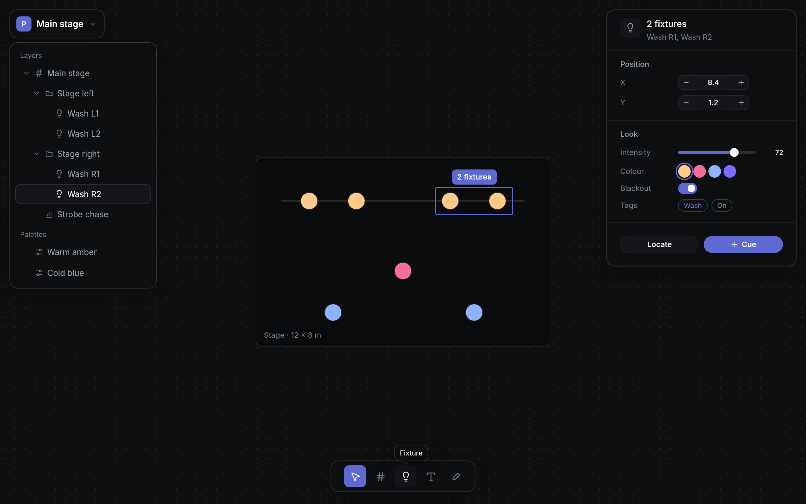
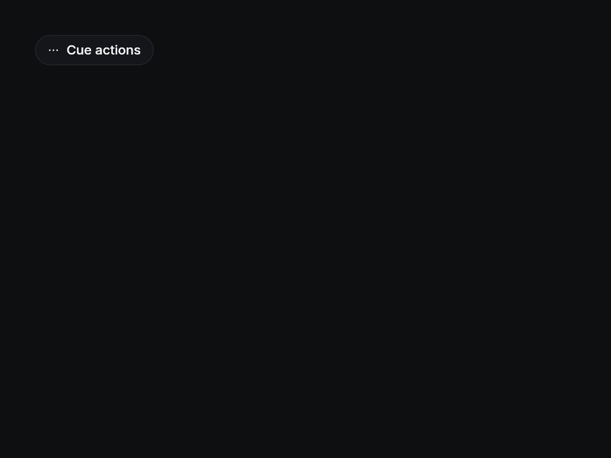
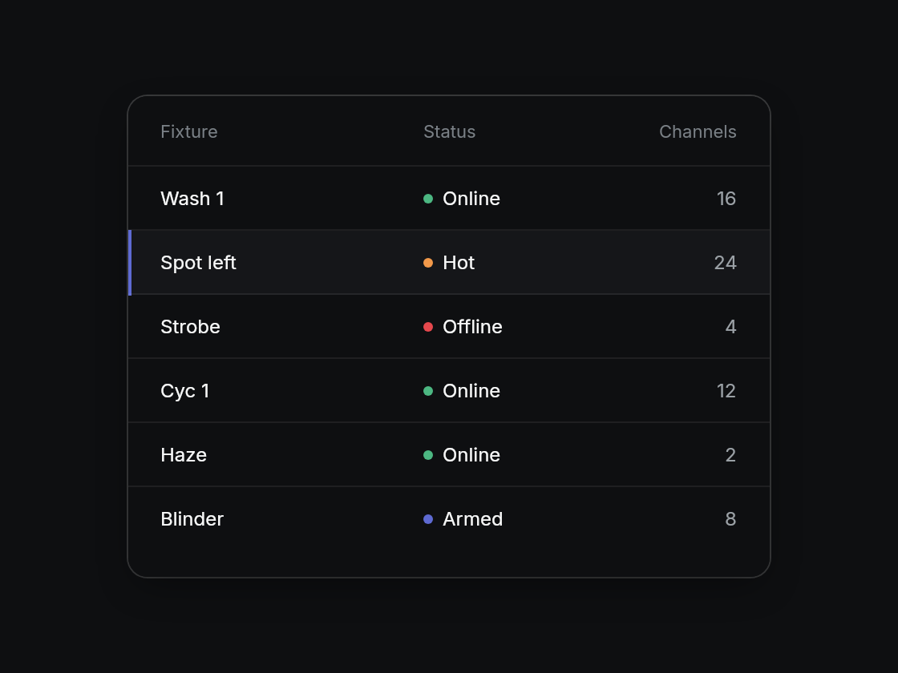

Styles that cascade
Rules on tags and classes apply by specificity, then by order, as in CSS. :hover,
:focus-visible and :touch match; properties inherit; transitions are
declared per property.
Being revived in 2026, on C++23
A retained-mode UI library. Skia draws, Yoga lays out with flexbox, and a CSS-like style system with skin sets and themes drives both.

Each frame runs these steps in order, and only when a window needs one: input, a timer, a posted task or an animation. Otherwise the loop sleeps.
Rules on tags and classes apply by specificity, then by order, as in CSS. :hover,
:focus-visible and :touch match; properties inherit; transitions are
declared per property.
Components own their behaviour; skins only draw. A skin set supplies the skins and rules, a theme supplies the values: palette, elevation, type, metrics and motion. Light and dark follow the system.
Every style property has a setter on Div, and every setter returns the most derived
type through explicit object parameters, so calls chain in any order.
Bézier curves and springs solved in closed form, style transitions, entering and leaving
classes like CSS's @starting-style, and layout transitions that slide rows to their
new places. Reduced motion makes it all instant.
Taps, pans with fling and long presses for context menus; hit slop around small controls; Tab through focusable controls with a focus ring for the keyboard only.
add<T>() creates a child and returns it, so a tree reads top to bottom. Base and
component setters chain in any order, and misuse, like a string where a number belongs, doesn't
compile.
SDL3Application runs windows on their own. An application that already has a window
and a loop embeds Psychic UI through an SDL3 or GLFW adapter instead, the way Dear ImGui's backends
work.
Looks belong in stylesheets, written from the theme, so they follow it when it changes.
class CueWindow : public Window {
public:
CueWindow() : Window("Cues") {
skinSet<PivotalSkins>(); // Light or dark with the system
auto &panel = appContainer().add<Div>().padding(24).gap(12);
panel.add<Label>("Opening night").addClassName("h2");
panel.add<Switch>("Blackout").checked(true);
panel.add<Button>("Go")
.icon("play")
.skin("primary")
.onClick([] { /* run the cue */ });
}
};
int main() {
SDL3Application app;
app.open(std::make_shared<CueWindow>());
app.run();
}void CueStyles::load(StyleManager *manager) {
const Theme &theme = manager->theme();
manager->style("Button ButtonSkinBase.primary")
.borderRadius(theme.metrics.radius.control)
.transition(Property::backgroundColor, theme.metrics.motion.quick());
}The same demo app, its components untouched. Pick a set to restyle every screenshot on this page.
The demo app from the repository: Default skin set, Pivotal Dark theme.
Each screenshot is a scene in the showcase program, rendered offscreen at twice the pixel density. Select one to see it full size.
Primary, secondary, ghost, quiet and danger are skins of one component.
Fields, search, segmented controls, selects, steppers, sliders, swatches, switches.
Page headers, menu bars, tabs, tool bars and empty states.
Captured after Tab, Tab and Right: the ring shows for the keyboard, never for a click.
Groups, icons, shortcuts, checks, radios and submenus, all from data.
From a right press, a long press, or the Menu key.
The options open under the field, the chosen one checked.
Shown after the mouse rests on a tool, placed above it with an arrow.
Modal over a scrim, the first field focused, Tab kept inside.
Stacked in the corner, with variants and actions.
Sortable columns, a sticky header, a selection the keyboard moves.
Rows with leading and trailing parts, and a tree that expands with the arrows.
Five tones, removable chips, initials tinted from the name.
The theme's scale, wrapping and ellipsis through SkParagraph.
Pivotal's icons and the Lucide icons they lack, as vector data drawn at one stroke weight.
Popups scale and fade from their anchor, and rows slide to their new places when a grid sorts. Captured frame by frame; the Default set.


Desk switches density with the input. The same panel, with a mouse and then by touch, where controls grow and each one's touch target reaches 44 px.
CMake 3.24 or newer and a C++23 compiler: GCC 14+, Clang 18+, Apple Clang 16+, or clang-cl on Windows. Skia, Yoga and psychic-color are submodules; Skia is built by CMake on the first build, which takes a while.
Inside your own CMake project, add_subdirectory the checkout and link
psychic-ui::psychic-ui.
git submodule update --init --recursive
cmake --preset debug
cmake --build --preset debug -j"$(nproc)"
# The demo, the tests, and these screenshots
./build/debug/example/psychic-ui-demo
ctest --preset debug
tools/showcase/capture.sh